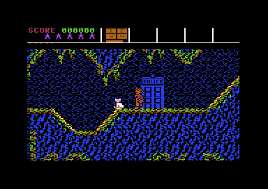
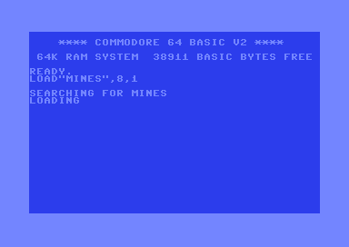

<meta charset="utf-8">
<meta name="viewport" content="width=device-width, initial-scale=1">
<title>Doctor Who and the Mines of Terror</title>
<link rel="preconnect" href="https://fonts.googleapis.com">
<link rel="stylesheet" href="https://fonts.googleapis.com/css2?family=Lato:wght@400;700;900&family=IBM+Plex+Mono:wght@400;500&display=swap">
<link rel="stylesheet" href="reference/dw-page.css">
<!-- tabs -->
<header class="hero">
  <p class="eyebrow">Commodore 64 · 1986 · Micro Power</p>
  <h1>Doctor Who and the Mines of Terror</h1>
  <p class="sub">An arcade adventure in which the Sixth Doctor and Splinx, a robot cat he programs, explore a mine the Master has taken over.</p>
</header>
<main class="wrap">
  <section id="adventure">
    <p class="fig">01 · The adventure</p>
    <h2 class="t">The Doctor, a robot cat and a mine full of heatonite</h2>
    <p>The Master has taken over a heatonite mine on the second moon of Rijar. The Doctor lands there in the TARDIS with Splinx, a robot cat. He has to stop the heatonite production, recover the plans for the TIRU that the Master is building, and get away, in the TARDIS or in an escape pod.</p>
    <p>The mine is one large map that scrolls in every direction: caverns joined by ladders, a lift and a carrier that runs along a track. The Doctor walks, climbs and jumps. He can carry four items in his pockets, and he can drop markers for Splinx. Splinx follows him, or runs a program of up to ten commands typed in on a screen of its own. Controllers, a madrag and her eggs, explosions, long falls, stalagmites and thin air can all cost the Doctor one of his five regenerations.</p>
    <figure class="shot"><figcaption>The first screen: the Doctor, Splinx and the TARDIS. Captured in an emulator from the copy studied here.</figcaption></figure>
    <p class="overview-links"><a href="levels.html">Explore the whole mine</a><a href="mechanics.html">See how it works</a><a href="discoveries.html">Read the discoveries</a></p>
  </section>
  <section id="release">
    <p class="fig">02 · The release</p>
    <h2 class="t">A BBC Micro game, brought to the Commodore</h2>
    <p>Micro Power released the game for the BBC Micro in 1985, and for the Commodore 64 and the Amstrad CPC in 1986, according to <a href="https://en.wikipedia.org/wiki/Doctor_Who_and_the_Mines_of_Terror">Wikipedia</a>. A ZX Spectrum version was developed and never released. The same article says the game began as a sequel to the BBC Micro game <i>Castle Quest</i> and was turned into a Doctor Who game partway through development, and that the BBC version was too big for the machine's memory, so it came with a ROM chip of its own to fit inside the computer. The <a href="https://www.gamesthatwerent.com/2022/01/doctor-who-and-the-mines-of-terror/">Games That Weren't</a> page on that Spectrum version opens with its author's own story: he had long thought the Commodore 64 version was never released, because a Commodore Force feature on unreleased games included it by mistake, until he later found an original copy.</p>
    <p>The key list usually found online is the BBC Micro version's, and it does not work on the Commodore. The controls on this site are read from the Commodore game's own input routine.</p>
    <p class="overview-note">The history here comes from the pages linked above, read on 30 September 2026. Nothing on the other tabs depends on them.</p>
  </section>
  <section id="reception">
    <p class="fig">03 · Reception</p>
    <h2 class="t">86 % from Zzap!64, and a price that sank the publisher</h2>
    <p>The Commodore version's best-known review is <i>Zzap!64</i>'s of April 1986, which <a href="https://gb64.com/oldsite/gameofweek/13/gotw_doctorwhomines.htm">GameBase64</a> reproduces. It liked the play far more than the graphics and sound, and saw a likeness to <i>Castle Quest</i> (<a href="https://en.wikipedia.org/wiki/Doctor_Who_and_the_Mines_of_Terror">Wikipedia</a>).</p>
    <table class="t">
      <tr><th>Magazine</th><th class="n">Score</th><th>What it said</th></tr>
      <tr><td><i>Zzap!64</i>, April 1986</td><td class="n">86%</td><td>"It does take time to get into, but once you do, it proves enthralling and enjoyable to play." And: "The big niggle is the horrible music which burbles away throughout the game."</td></tr>
    </table>
    <p>The game did not sell well. In 2013 <a href="https://theregister.com/2013/11/07/antique_code_show_doctor_who/?page=2">The Register</a> wrote that Micro Power promoted it heavily but had to charge £14.95 because it shipped with a 16 KB ROM chip, which kept it off the Spectrum, and that "the huge cost of its development did for Micro Power". Wikipedia gives the ROM chip to the BBC Micro version, whose game was too big for the machine's memory.</p>
  </section>
  <section id="copy">
    <p class="fig">04 · The copy studied</p>
    <h2 class="t">One packed file, straight into play</h2>
    <p>The copy analysed here is a single program file of 29,175 bytes. It unpacks itself and starts the game straight into play, with no title screen, menu or trainer. Its memory still holds the original release's loading picture and a small loader routine that printed "PLEASE WAIT -- STILL LOADING".</p>
    <figure class="shot"><figcaption>The file loading in an emulator.</figcaption></figure>
  </section>
  <section id="findings">
    <p class="fig">05 · What the code shows</p>
    <h2 class="t">A time bonus that almost never counts down</h2>
    <p>The game pays a bonus for time left at the end, starting at 10,800. A slip in the frame counter means it goes down by one only every 21.8 minutes, so almost every game gets all of it. The save menu has a surprise of its own: it saves the game and then drops to BASIC, so saving ends the game. These and the other quirks are on the <a href="discoveries.html">Discoveries</a> tab.</p>
    <p class="overview-note">The <a href="source.html">source listing</a> links every explanation to its address in the analysed game. The <a href="about.html">About tab</a> records contributors, sources and methods. No game image is hosted here.</p>
  </section>
</main>
